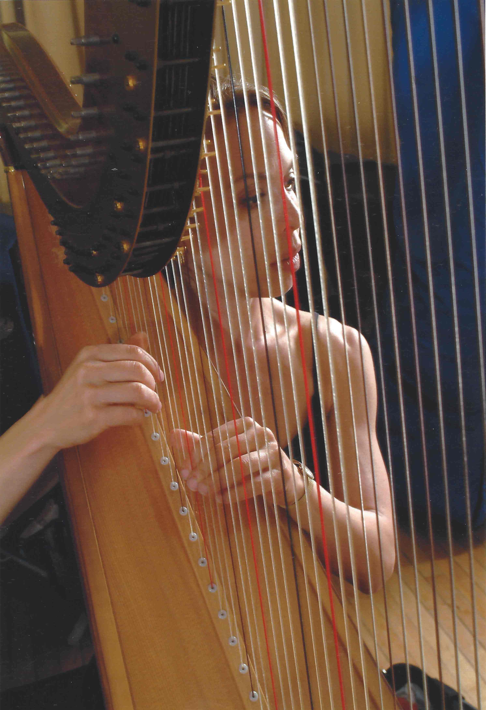
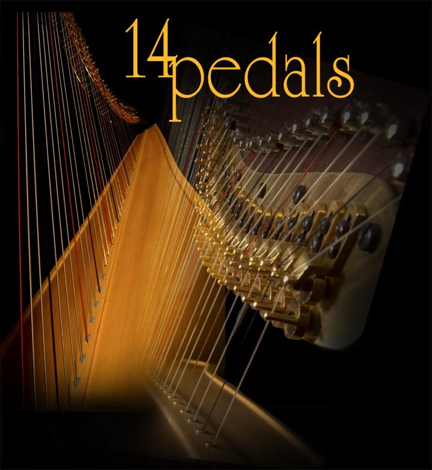

Bershad's elegant and heavenly harp music and flexible repertoire matches the mood of your event, whether it's a wedding ceremony and reception, corporate function, anniversary, birthday, or shower. Harp solo or with flute and violin, classical, jazz, celtic, popular, and jazz standards.

Kara Bershad, native Chicagoan, began playing harp at age 10 and has studied with some of the world's finest music educators including Edward Druzinsky, Principal Harpist of the Chicago Symphony, Eileen Malone at Eastman School of Music, and Gerard Devos at the Paris Conservatory.
Appearances with orchestra include numerous prestigious performances with the Chicago Symphony Orchestra, Ravinia Festival Orchestra, Chicago Philharmonic, Grant Park Music Festival Orchestra, Music of the Baroque, Rochester Philharmonic, and the Chicago Jazz Ensemble.
Kara holds the positions of principal harpist with the Northwest Indiana Symphony Orchestra and Orbert Davis’ Chicago Jazz Philharmonic (CJP), and is Professor of Harp at North Park University.
Kara is no stranger to sharing the stage with popular celebrity entertainers. Her concert appearances include Tony Bennett, Johnny Mathis, Julie Andrews, Aretha Franklin, The Moody Blues, and the band, Yes, to name a few. Broadway theatre performances include A Little Night Music (Goodman Theatre), Beauty and the Beast (Chicago Theatre), Light in the Piazza (Goodman Theatre), The Producers (Oriental Theatre), and Showboat (Auditorium Theatre).
Kara also has extensive recording studio experience. Among her credits are nationally recognized radio and television commercials for Allstate, Princess Cruise Lines, Budweiser Beer, and McDonald’s Corporation. Her performances on harp can also be heard in the Hollywood film scores of My Best Friend's Wedding, Home Alone II, and the Kodak Film documentary, Symphony.
Available as harp solo or as a harp/flute duo, from "Baroque to Broadway," Kara provides the finest music Chicago has to offer. Whether she is working closely with a bride-to-be or a corporate event planner, Kara Bershad promises professional expertise and refined performances.
Kara is a prolific arranger of music for both harp solo and ensemble. She is founder of 14 Pedals Publications.
Carols of the Winter Solstice is a unique setting of twelve lovely carols. Its rich textures are brilliant and meditative. World percussion is intertwined with two harps, adding an exquisite dimension to this dreamy collection. Carols of the Winter Solstice is a lovely gift for teachers and health practitioners (background music for massage therapists, accupunture, and the healing arts), family and friends. It is also a meaningful holiday gift in the business world.
Carols of the Winter Solstice is filled with joy and magic, bridging the worlds of classical, popular, jazz, and holiday music.
To purchase Carols of the Winter Solstice, click here.
| 1. Noel Nouvelet and Patapan | |
| 2. In the Bleak Midwinter | |
| 3. Do You Hear What I Hear/Little Drummer Boy | |
| 4. Bring a Torch, Jeanette, Isabella | |
| 5. I Saw Three Ships | |
| 6. I Wonder as I Wander | |
| 7. Silent Night Fantasy | |
| 8. Carol of the Bells | |
| 9. Still, Still, Still | |
| 10. Chistmas Canon, Canon in D/The First Noel | |
| 11. While Shepherds Watched Their Flocks | |
| 12. Up on a Housetop |

Christmas Cannon - Purchase here.
Pachelbel's Canon in D/The First Noel
Arr. Marchildon
Bring a Torch Jeanette Isabella - Contact Us to Purchase - $16.50
Arr. Tick Tock
Carol of the Bells and Coventry Carol - Purchase here.
Arr. Tick Tock/Michael Keefe
Up on the Housetop - Purchase here.
Arr. Tick Tock
I Saw Three Ships with study CD - Purchase here.
Arr. Tick Tock
Noel Nouvelet and Patapan with study CD - Contact Us to Purchase - $20.00
Arr. Tick Tock
Playful Pizzicato from "Simple Symphony" - Purchase here.
Britten, Benjamin. Arr. Tick Tock
Concerto Grosso (for 2 harps with or without string quartet)
Watkins, David. - Contact Us to Purchase
Contact us at: karabershad@gmail.com or 773.991.8611
Webdesign by Elise Newman
Harp Artwork by Blaine Bershad